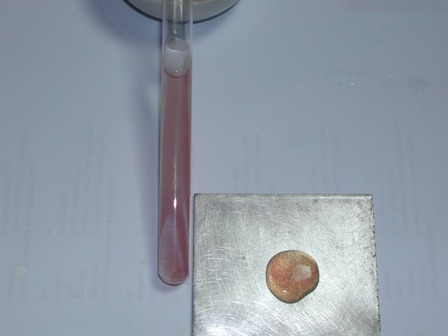
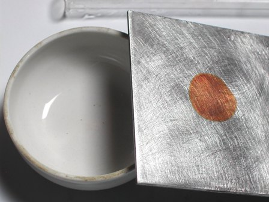

Dopo il rilassante ambiente dell'isola del Minotauro, un po' di chimica.
Esiste un interessante metodo per la determinazione qualitativa del selenio, che abbina alla estrema semplicità di esecuzione anche una notevolissima sensibilità (una decina di ppm); tale metodo, consigliato da una dotta fonte che chiamerò A., sfrutta la particolare colorazione di una delle forma allotropiche del selenio, quella rossa.
Il selenio si presenta anche sotto gli allotropi nero e grigio, e quando questo elemento è sotto quest'ultima forma ha spiccate proprietà semiconduttrici.
Chi non ricorda (non mi rivolgo ai giovanissimi...) i vecchi esposimetri, detti appunto "al selenio", esibiti trionfalmente dagli appassionati di fotografia di qualche decennio fa? L'esposimetro era la macchinetta che distingeva un vero "fotografo" da un qualsiasi dilettante della domenica.
Ricordo che la mia prima reflex (la famosa Zenith, made in CCCP) non l'aveva incorporato, e quindi allora giravo armato anche di un vecchio trabiccoletto al selenio, che mi aiutava ad esporre correttamente le foto che poi avrei sviluppato in camera oscura, con i reagenti che i fotografi insistevano (e insistono) a chiamare "acidi".
Sempre lui, l'elemento intendo, ebbe anche un breve ed intenso momento di gloria in campo elettronico a cavallo tra gli anni '50 e '60, quando fu molto usato negli apparecchi a valvole quale raddrizzatore per la tensione anodica.
Con il semplice dispositivo che si vede qui sotto

si riusciva a risparmiare due volte: sia una valvola (la raddrizzatrice), sia l'energia per il suo riscaldamento.
Questo fu uno dei primi colpi mortali che i semiconduttori assestavano alle loro calde concorrenti, e che alla fine avrebbero portato alla loro estinzione.
Ma torniamo a noi e alla chimica di oggi.
Mi è recentemente venuta in mano una piastrina di zinco e ho voluto provare il test di A. per il selenio.
Mi serviva una minima quantità di selenito di potassio K2SeO3 per condurre la prova e quindi sono partito da questa fase.
Il selenio si ossida facilmente ad acido selenioso H2SeO3 con acido nitrico concentrato, secondo la reazione:
3 Se + 4 HNO3 + H2O --> 3 H2SeO3 + 4 NO
Si pone in capsula una puntina di spatola di Se, si aggiunge un eccesso di HNO3, e si scalda fino ad evaporazione (in locale adatto e senza esagerare con la temperatura!), eventualmente ripetendo l'operazione.
La polvere grigia si scioglie e si ottiene alla fine una crosticina bianca di acido selenioso H2SeO3.
Si pone in una provetta con qualche ml di acqua e qualche goccia di KOH ed ecco pronto per il passaggio successivo un bel campioncino di selenito di potassio.
In presenza di opportuni riducenti, come i solfiti in ambiente fortemente acido, l'acido selenioso e i rispettivi sali vengono ridotti a selenio rosso, di colore molto caratteristico.
Sono partito da circa 1 ml di una soluzione diluitissima di selenito (non ho quantificato ma il Se era proprio poco), vi si scioglie una puntina di spatola di K metabisolfito K2S2O5, e si aggiunge cautamente 1 ml di acido solforico concentrato.
Se il selenio non è proprio in tracce appare subito una colorazione rossa, altrimenti porre un paio di minuti in acqua bollente ed apparirà la colorazione.
Ho provato varie volte questa procedura ed ho verificato che il metodo non è per niente critico e la colorazione rossa caratteristica si evidenzia con facilità, anche in presenza di altri elementi, come il rame, che non interferisce nemmeno se presente in abbondanza.

La provetta (inquinata con rame) evidenzia la presenza di selenio; la fotografia è vergognosamente povera ma in qualche modo rende l'idea.
Il Se4+ viene ridotto ad elemento nella forma rossa anche dallo zinco, secondo la reazione:
H2SeO3 + 2 Zn + 4 HCl --> Se + 2 ZnCl2 + 3 H2O
Si pulisce accuratamente una lamina di zinco con carta vetrata, portando al vivo il metallo, e subito vi si pongono un paio di gocce di soluzione di Se4+ in soluzione debolmente cloridrica.
Ben presto apparirà una macchia rossa o di color bronzeo, in funzione della concentrazione in Se.
Naturalmente con questo metodo non devono essere presenti metalli riducibili dallo zinco (come il rame, ecc.) che maschererebbero in nero l'eventuale macchia rossa.
Ecco il risultato di questo selenico test sullo zinco ben cartavetratato: nessun dubbio sulla presenza dell'elemento!
